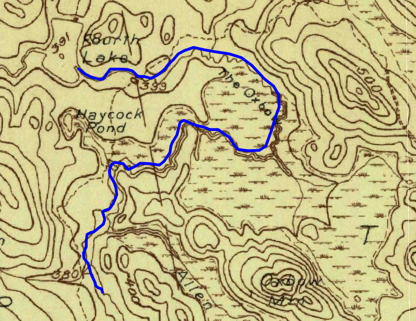

The first 6000-m of the Narraguagus River downstream of Deer Lake runs through a series of wetlands locally known as The Oxbow
(see Figure OB.1), with an average down valley slope of 0.0005 m/m. Although there are short segments of the Narragugagus River within
The Oxbow that are somewhat confined as the river runs between forested hills, much of this segment of river is unconfined with valley widths
occasionally exceeding 1000-m. Despite the availability of unforested, extremely flat terrain adjacent to the river, the main channel has moved
very little since 1929 (see Figure OB.2, https://ngmdb.usgs.gov/topoview/viewer/#13/44.9936/-68.1450). Chandel et al. (2017) proposes that there
are two modes of behavior that describe how peatland channel planform evolves over time. These modes are based on the relative high strength of the
peat embankments as compared to that of mineral soil embankments. Where peatland channels are disconnected from upland banks, the channel location
is very stable over time (see Figure OB.3). Where one side of the peatland stream is in contact with a mineral soil embankment, the stream stays
attached to the mineral soil embankment over time, even when the peatland slow aggrades or degrades.
Chandel, J., B. Makaske, et al., 2017. Oblique aggradation: a novel explanation for sinuosity of low-energy streams in peat-filled valley systems.
Earth Surface Processes Landforms, Vol 42, 2679-2696.

Figure OB.1 - Deer Lake and the Oxbow.

Figure OB.2 - 1929 USGS Topographic Map segment, the blue line shows the current position of the Narraguagus River.